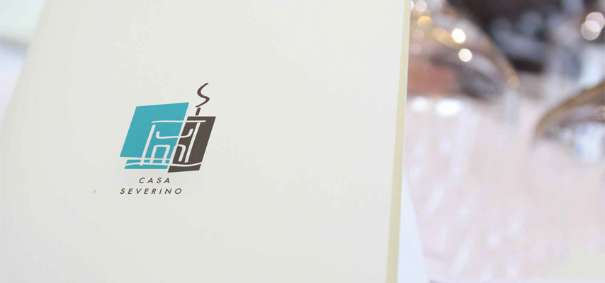

<div id="imagenPpal">
	
	<div id="textoPpal" class="servicios">
		Dispone de calefacción con termostato independiente en cada habitación y agua caliente. Todas las habitaciones están 
		dotadas de ropa de cama y toallas para todos los huéspedes. Además, las estancias son independientes, ya que
		disponen de su propia cerradura.
Para los más perezosos, es posible contratar el servicio de comidas a domicilio, incluso con nuestra gastronomía
 típica, así como el servicio de lavandería.
	</div>
</div>